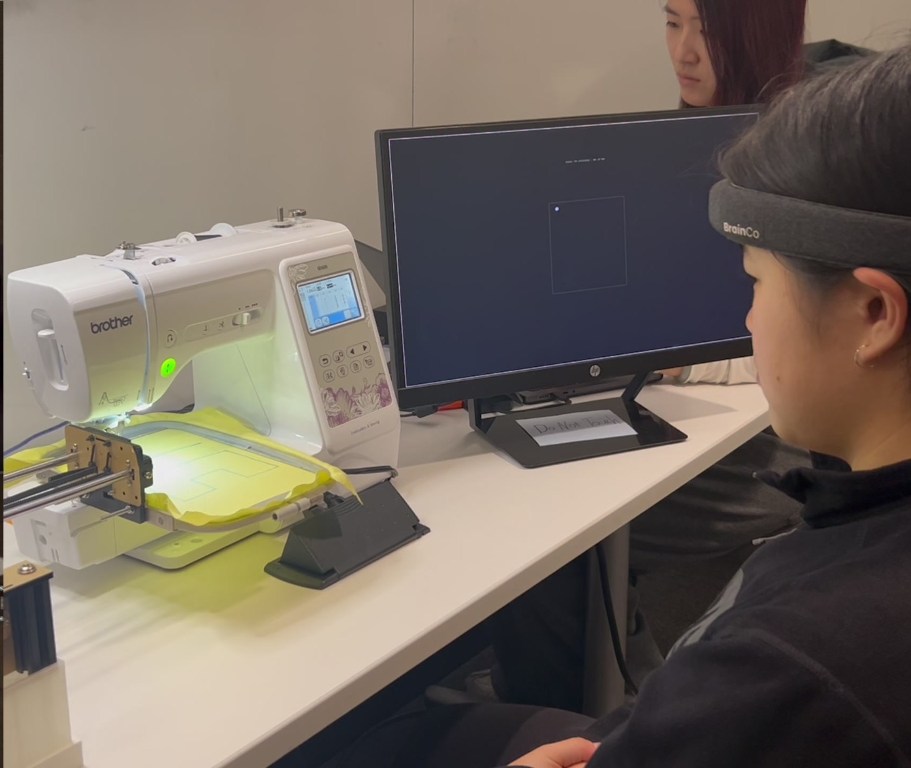
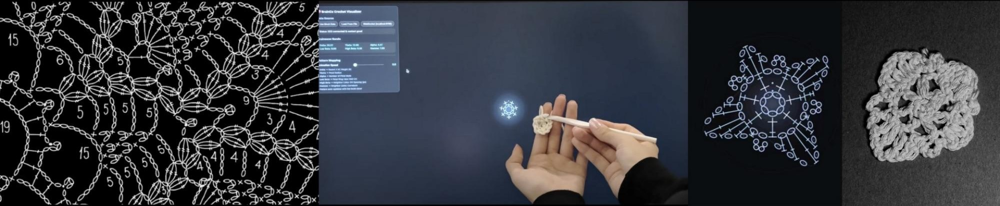
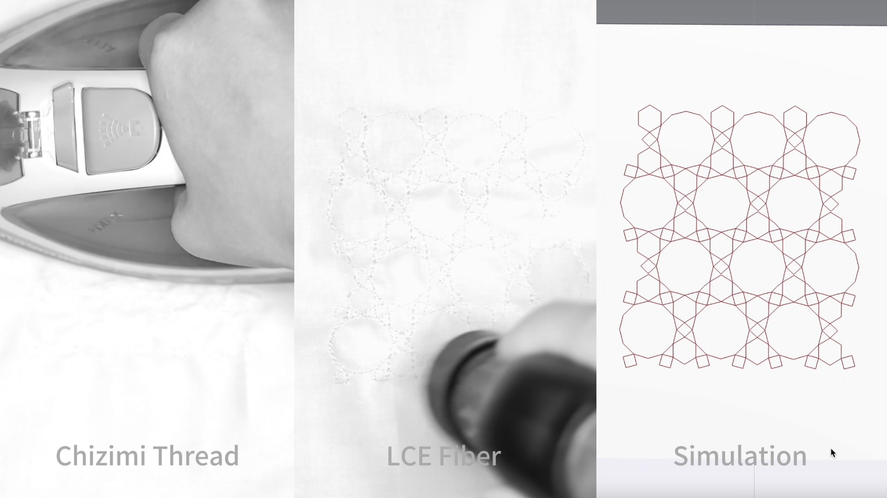
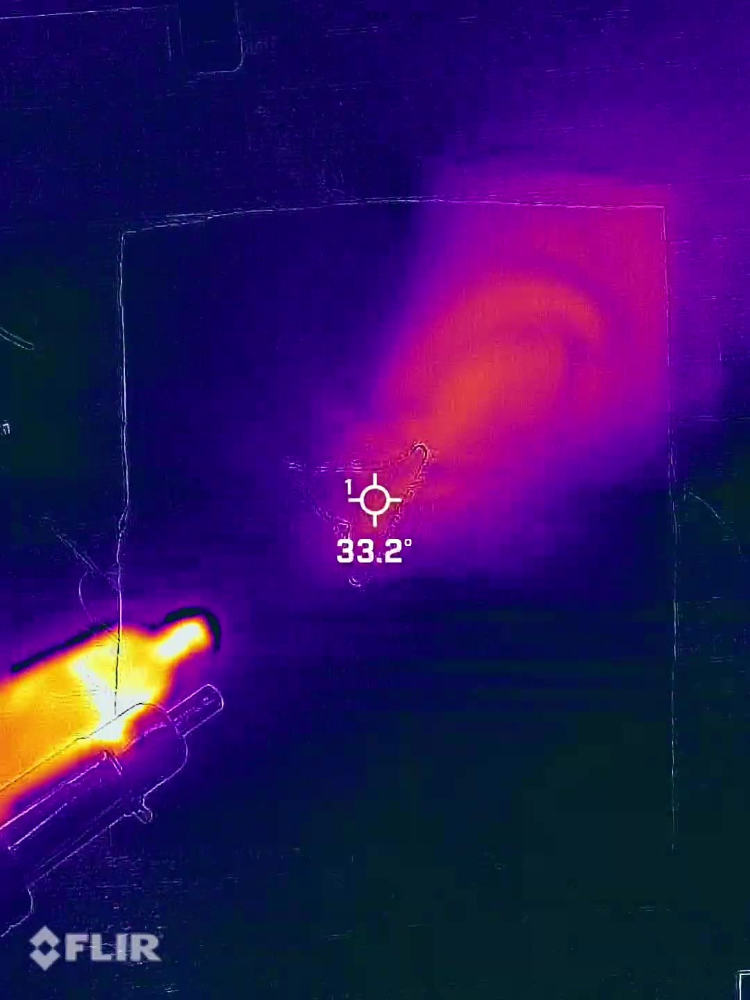
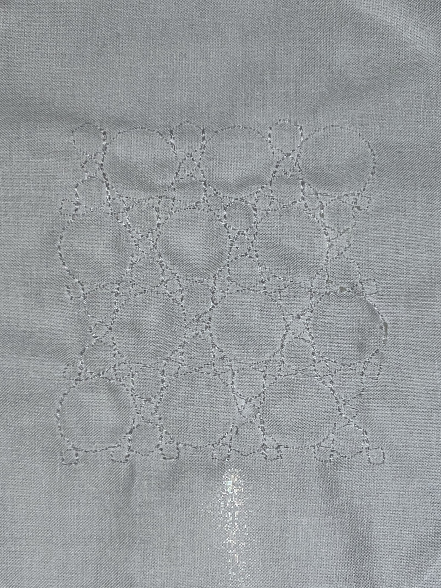
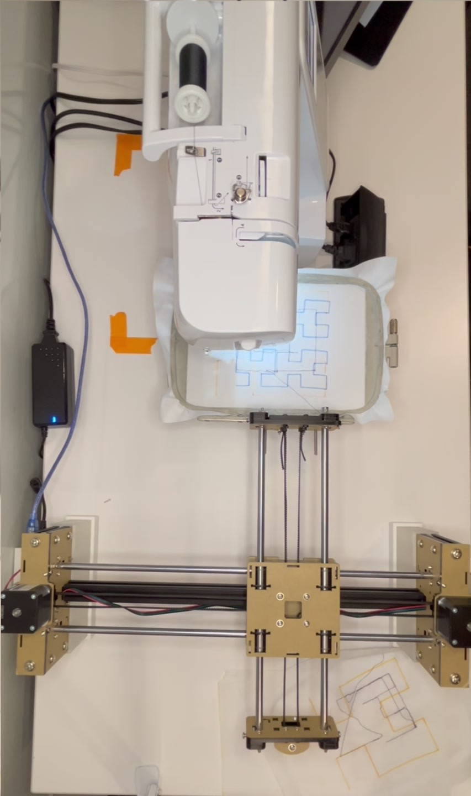
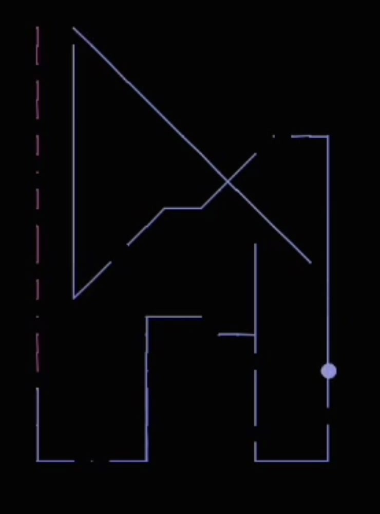

The Space Between: an EEG-guided embroidery machine
A sewing machine you steer with your head and your attention. A BrainCo EEG headband tracks the wearer’s head movement and attention level; head movement drives a two-axis plotter that moves the fabric hoop under a Brother embroidery machine, and attention sets the stitching speed. The person and the machine end up co-steering the same line of thread. It was our team’s final project for MAS.S60 Critical Matter: Emotive Design from Fashion to Urban Scale, and it grew out of two mini projects earlier in the semester: one that turned brainwaves into crochet patterns, and one that gave embroidered geometry a physical behavior.

- My role
- What you owned on the team, e.g. the plotter and hoop mount, the EEG-to-motion mapping, the embroidery tests, the video
- Timeline
- October to December 2025 (two mini projects, then a three-week final build)
- Context
- MAS.S60 Critical Matter: Emotive Design from Fashion to Urban Scale, taught by Behnaz Farahi, MIT Media Lab
- Team
- Annie Xing, Yao Wang, Giacomo Puri Purini, Awu Chen, and me
- Methods
- Literature review on EEG and craft, biosignal mapping and rapid prototyping, material experiments with heat-reactive thread, digital fabric simulation, hardware modification, an interview with a master embroiderer, and in-lab demos
- Tools
- BrainCo EEG headband and Zenlite SDK, Python, p5.js, Brother embroidery machine, two-axis plotter, Chizimi shrink thread and LCE fiber, FLIR thermal camera
- Presented
- Final presentation, December 15, 2025
- Input and output
- Input: head movement and attention level from EEG. Output: a stitched line on fabric, and a digital twin of the same line on screen.
What were we trying to find out?
Where does creativity live: in the hand, in the machine, or in the space between? And what happens to a craft when the tool it depends on shifts from the hand to the mind? The semester kept returning to this. Each project answered a smaller version of it before the final one put a person and a machine on the same thread.
Why this mattered
Craft has always been a story about the human hand. But the hand trembles, the eye loses focus, the body tires. The craftsperson whose hands are no longer steady, or whose sight is going, is quietly written out of that story. We wanted to ask who gets to be a maker if the primary tool of craft can shift from manual dexterity to attention.
One person anchored that question for us. Kiyomi Osawa is a master of yokoburi, the horizontal swing embroidery of Kiryu, Japan, where she has sewn since she was seventeen. She lost half her eyesight at 73 and continues to embroider; her line is that thread is paint and the needle a brush. Our team interviewed her about how the industry treated the people who did its most skilled work, and why she decided to change it. Her practice became the reference point for a machine that would share authorship rather than replace the hand.
We also borrowed a frame from neuroscience: creative flow as a sustained tension between the default mode network (imagination, association, daydreaming) and the executive control network (evaluation, focus, decision). Let one dominate and you get work that is either novel but impractical or feasible but predictable. That idea runs through all three projects.
Two mini projects that pointed the way
Mini Project 1, October: the mirror. We built a tool to observe creativity. A BrainCo EEG headset streamed brainwave band powers through a small Python bridge (Welch power spectral density over the raw signal, then a WebSocket) into a p5.js crochet pattern visualizer. Each band drove a parameter of a radial crochet motif: theta set the petal radius, alpha the number of petal buds, low beta the petal ring, high beta the spacing of the links between neighbors. A simple score weighed alpha and theta against beta and gamma to show whether the wearer was drifting toward the default mode or the executive side. Then one of us crocheted the pattern the brain had generated. It worked, and it taught us the limit of observation: a mirror cannot dance with you. Flow needs a counterforce, not just a display.

Mini Project 2, November: geometry and tension become controllable variables. We moved from the hand to the machine and from a screen to material. Using a Brother embroidery machine we stitched geometric patterns (a lattice of circles and octagons, parallel waves) in two heat-reactive threads, Chizimi shrink thread and liquid crystal elastomer fiber. Applying heat with a heat gun, and watching it with a thermal camera, made the stitched geometry contract and pucker the fabric into a three-dimensional texture. We ran a digital simulation of the same patterns alongside the physical samples to see how well the geometry predicted the behavior. The takeaway was that geometry plus tension plus heat gives you behavior, and that the machine’s stitch-by-stitch controls could be handed back to the person at the hoop.



How we approached the final project, and why
The mini projects gave us an input we trusted (EEG band powers and head motion from the headband), a machine we knew (the Brother embroidery machine), and a reason to put them together: technology that participates rather than observes. The final project moved from a sequential loop, think then make, to a simultaneous one where the person and the machine act on the fabric at the same time and control is distributed between them.
| Method | Why this method | What it gave us |
|---|---|---|
| Interview with a master craftsperson | We needed the question to come from a practice, not from the hardware. Osawa-san’s account of Kiryu’s embroidery industry and of continuing to sew with half her sight grounded the accessibility framing. | The reference point for what shared authorship should feel like, and the opening of our final video. |
| Biosignal to motion mapping | Head movement is a signal almost everyone can produce, and attention is the state we most wanted to make visible. Mapping one to position and the other to speed kept each legible. | Head movement drives the x and y of the plotter; attention level sets the stitching speed. |
| Hardware modification | A commercial embroidery machine follows its own file. To let a person steer it live we had to move the fabric ourselves and take over the pedal. | A two-axis plotter carrying the hoop under the needle, and programmable speed control in place of the foot pedal. |
| Digital twin | The stitch happens under the needle where you cannot see it well. A live trace on screen lets the person see the negotiation as it happens and lets us compare intention against outcome afterward. | A record of each session: the path the head drew, and where the machine drifted or resisted. |
| Two task modes | A pre-printed pattern tests following; a blank hoop tests exploring. We wanted both in the same system so deviation could read as conversation rather than error. | A maze pattern to trace, and a free-form mode with no pattern at all. |
What we actually did
-
Deciding the path
Week of November 24We met at the Media Lab twice a week. The first decision was to buy a plotter and build the system around moving the fabric rather than the needle. We split the work across the machine documentation, CAD and 3D printing, the programming, and replacing the pedal with speed control driven by the headband, and we looked into whether the headband could also pick up eye movement.
-
Building the machine
Week of December 1A second plotter order went in, and we settled on the Brother machine for the demo. The motor hack and the pedal replacement happened in parallel. We also argued about the why: were we building this for blind makers, for makers with motor impairments, or for the broader question of who gets to make? Osawa-san’s story kept the answer honest.
-
Closing the loop
Week of December 8Head movement from the headband was wired to the plotter’s x and y, attention level to the stitch speed, and the digital twin began recording what the fabric received. We stitched the maze pattern and then went free-form, watching where the machine followed and where it pulled.
-
Presenting it
December 15The final presentation framed the semester as a move from observation to negotiation: the mirror of Mini Project 1, the controllable material of Mini Project 2, and finally a partner. The claim we ended on was that when EEG starts pulling the fabric, authorship becomes shared.


What we learned
Observation is not enough
Mini Project 1 made cognition visible and left the person in full control, and it felt inert. Flow needs a counterforce. The final system works because the machine pushes back.
Deviation is conversation
With a pre-printed maze, the gap between the printed line and the stitched one is where the negotiation shows. Following and drifting, intention and distraction, read as a record of attention rather than as mistakes.
Material has agency too
Mini Project 2 showed that thread, heat, and fabric tension actively shape outcomes. In the final system the fabric resists the plotter and the needle, so the artifact is negotiated three ways: mind, machine, material.
The hardest part was the handoff
Getting a commercial machine to accept live control meant replacing its pedal and moving the fabric ourselves. The interaction only became legible once speed and position were separated into two different signals.
Where it landed
A working system: a two-axis plotter and a Brother embroidery machine driven by a BrainCo EEG headband, with a digital twin on screen. It can stitch a pre-printed pattern or run free-form, and it works with different fabrics and patterns for people of different skill levels. The final video opens with our interview with Osawa-san and closes with the machine in use.
Looking back
What worked
Building up through two mini projects meant the final one started with an input and a machine we already trusted, so the three weeks went into the handoff between them rather than into basics. Separating position from speed gave the interaction a shape people understood in seconds.
Limitations
Three weeks of build time, demoed by the team in the lab rather than with the makers the framing is about. We did not evaluate whether people can learn to modulate their attention to get the line they want, and the study design we sketched for novices, experienced makers, and blind or motor-impaired participants stayed a proposal.
What I’d study next
How makers experience the distribution of agency between cognitive state, manual control, and machine behavior; whether stable visual signatures of particular cognitive-machine states emerge in the stitching; whether people can learn to modulate their state to get the line they want; and, most of all, whether this gives makers with visual or motor impairments creative agency they would recognize as their own.